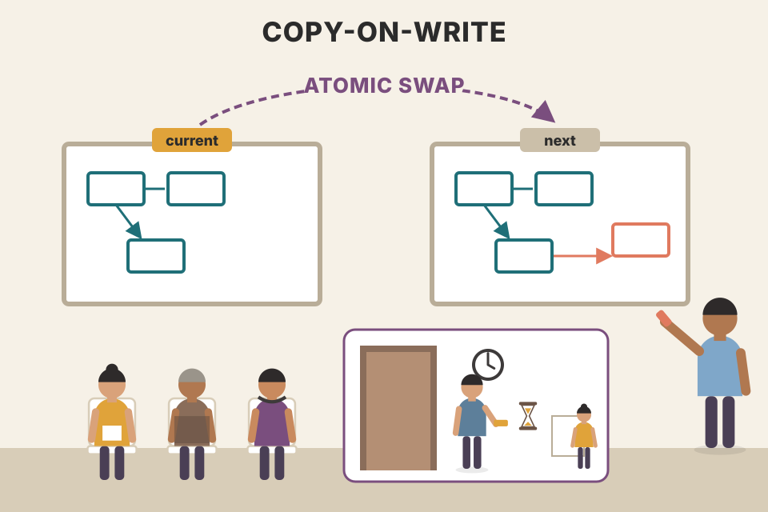
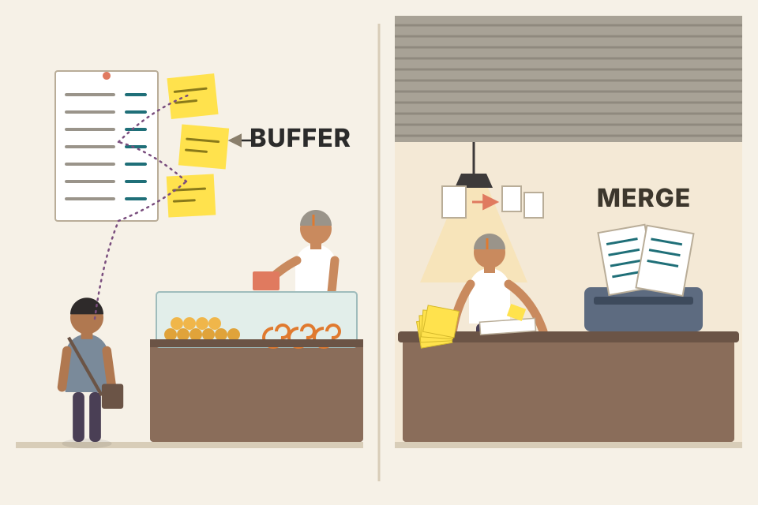
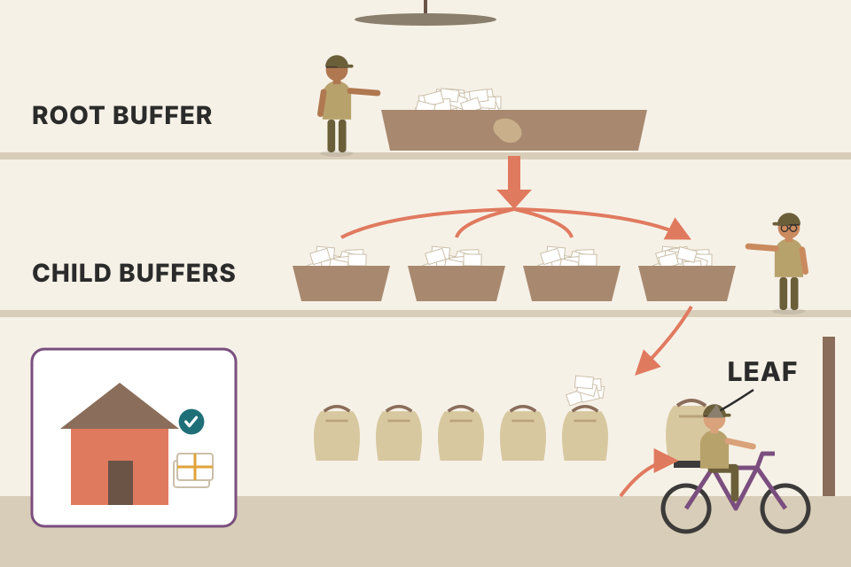
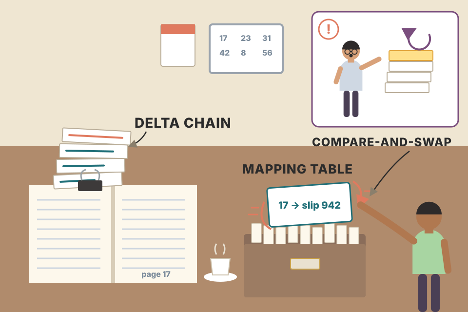

Chapters 2–5 built the classic B-Tree: pages updated in place, protected by latches, made durable by a write-ahead log. This chapter asks what happens if you change one of those choices. Never overwrite a page (copy-on-write). Don't write every change straight away (lazy buffers). Never do random writes at all (FD-Tree). Never take a latch (Bw-Tree). Never tune for a block size (cache-oblivious). Each plate below explains one variant in plain words, lets you run it step by step, and puts a number on what it fixes and what it costs.
Every variant keeps what makes a B-Tree a B-Tree: a sorted tree, balanced by splits and merges, searched and deleted the same way. What changes is how a change reaches the disk and how threads share the tree. Read each row as "the problem → the trick → what it costs".
All B-Tree variants share four things: the tree shape, balancing through splits and merges, and the lookup and delete algorithms. What differs between implementations is everything around that: how they handle concurrency, how a page is represented on disk, whether sibling nodes are linked, and what maintenance processes run in the background.
The chapter walks through five techniques:
| Variant | The idea in one line | Main thing it fixes |
|---|---|---|
| Copy-on-write B-Tree | Nodes are immutable. To change a page, copy it, change the copy, write it to a new place. | Readers need no latches; a crash can't leave a half-written tree |
| Lazy B-Trees | Buffer updates to a node in memory so several writes to the same node cost one I/O. | Write amplification |
| FD-Tree | Buffer updates in a small B-Tree; when it fills, write it out as an immutable sorted run; runs cascade down levels, like an LSM Tree. | Random writes (limited to the small head tree) |
| Bw-Tree | Split a node into a base part plus small change records, written append-only; batch changes to different nodes together. | Cost of small writes, latches, space reserved in pages |
| Cache-oblivious B-Tree | Lay the tree out so it works well for any block size, like an in-memory structure. | Having to tune for page/cache-line sizes |
The book also points ahead: the two-component LSM Tree in Chapter 7 takes the "lazy" buffering idea further and turns it into a fully immutable B-Tree.
A library card catalogue. Every variant keeps the same drawers in the same alphabetical order. They differ in the clerk's habits: one clerk rewrites a fresh card instead of erasing (copy-on-write), one collects corrections in a tray and files them at the end of the day (lazy), one never touches the drawers and just appends sticky notes with a lookup sheet saying where each drawer's newest note is (Bw-Tree).
Notes/syllabus.html) maps B-Trees to Database Internals Ch.2–4 and LSM Trees to Ch.7; this chapter is the bridge between the two.Instead of building complicated latching, some databases use copy-on-write to keep data correct while operations run at the same time. When a page is about to change, its contents are copied, the copy is modified, and a parallel tree hierarchy is built next to the old one. Pages that were not touched are reused by both trees.
Costs. More space (although old versions live only briefly: their pages can be reclaimed as soon as the operations still using them finish) and more processor time, because whole pages are copied. Since B-Trees are shallow, the simplicity usually wins anyway.
Biggest win. Readers need no synchronization at all: written pages never change, so they can be read without latches. Writes go to copies, so readers never block writers. Nobody can see a half-modified page, and a crash cannot leave a corrupted tree, because the root pointer flips only after every page change is done.
Editing a shared Google Doc by duplicating it, editing the duplicate, then changing the bookmark everyone uses to point at the new file. People who already had the old file open keep reading a complete, consistent version. Only the pages you changed need duplicating; the new copy links to the old unchanged chapters.
A write copies exactly the pages on the path from the root to the target leaf: one page per level. Everything else is shared by pointer. The old root is still a complete, valid tree, so a reader holding it sees a perfect snapshot (this is MVCC for free). The commit point is a single pointer write; before it, the new pages are invisible; after it, the old ones are garbage once no reader holds them. Try: start a reader, do two writes, and watch how many old pages have to stay alive until that reader finishes.
Assumptions: every level is full at the given fan-out, the update changes one record in one leaf, and nothing splits. In-place means the leaf page alone is eventually written back (WAL record not counted).
// Immutable nodes: never mutate, always return a new node.
type Node = { keys: number[]; kids?: Node[]; vals?: string[] };
function cowPut(n: Node, k: number, v: string): Node {
if (!n.kids) { // leaf: copy + change
const i = lowerBound(n.keys, k);
const keys = n.keys.slice(), vals = n.vals!.slice();
if (keys[i] === k) vals[i] = v; else { keys.splice(i, 0, k); vals.splice(i, 0, v); }
return { keys, vals }; // (split if too big — omitted)
}
const i = childIndex(n.keys, k);
const kids = n.kids.slice(); // copy this node's pointer array
kids[i] = cowPut(n.kids[i], k, v); // only one child is new
return { keys: n.keys, kids }; // siblings shared by pointer
}
let root: Node; // the ONLY mutable thing
function commit(k: number, v: string) {
const newRoot = cowPut(root, k, v); // build the parallel path
root = newRoot; // atomic pointer swap = commit
}The Lightning Memory-Mapped Database (LMDB) is a key-value store used by the OpenLDAP project, and it is built on copy-on-write. Because of that design it needs no page cache, no write-ahead log, no checkpointing and no compaction.
Footnote 1 sends you to LMDB's code comments and a presentation for more detail.

Two whiteboards labelled "current" and "next". Writers draw the new version on "next", then flip the label. Readers always walk to whichever says "current" and read it in peace. An old drawing can be wiped only after the last person reading it has left the room.
Modelled, not measured: 400 write txns, each copies one root-to-leaf path and frees the old one; a freed page can be reused only when no open reader started before the txn that freed it. A long reader opens at txn 50.
Freed pages are tagged with the transaction that freed them. A reader that started at snapshot t may still be walking any page that was live at t, so nothing freed after t can be recycled while it runs. With no long reader, the file stops growing almost immediately: each write reuses the pages the previous write freed. With a long reader, every write must take fresh pages from the end of the file, and the file grows by about one tree height per transaction until the reader closes. Afterwards the space is reusable, but in this model the file never shrinks back.
Before a page changes on disk, its in-memory representation has to change. There are three ways to represent a node in memory:
unsafe), the raw binary data in a page can be reinterpreted as a structure through a pointer and a runtime cast. The pointer usually points into memory owned by the page cache or into a memory map.Keeping the on-disk page, its cached copy and its in-memory form separate lets them have different life cycles. For example, you can buffer inserts, updates and deletes in memory and reconcile them with the original on-disk version during reads. That is exactly the door the next sections walk through.
A printed form. (1) Write on the paper itself with a pen. (2) Type the form into a spreadsheet, edit there, and print a new form at the end; easy to edit, but now there are two copies. (3) Hand the paper to a clerk who fills in the boxes for you as you dictate; you never touch the paper, but every change lands on it at once.
Some algorithms make B-Tree updates cheaper by putting lightweight, concurrency- and update-friendly in-memory structures in front of the tree. Updates go into these buffers first and reach the tree later. The book calls this family lazy B-Trees, and footnote 2 says plainly that this is not a commonly recognized name: Petrov chose "lazy" because what these variants share is buffering updates in an intermediate structure instead of applying them to the tree directly.
A postman who drives to a house once a day with all its letters, instead of once per letter. If ten letters for the same house arrive in a day, nine trips are saved. If every letter goes to a different house, buffering saves nothing.
Simulated: 20,000 updates, each to a page picked at random (uniform, or skewed so 20% of pages get ~80% of updates). Eager = one page write per update. Lazy = updates wait in a buffer; when the buffer is full, the page with the most pending updates is written in one I/O and its updates leave the buffer.
The saving equals the average number of updates that pile up on a page before it's written. That depends on how much memory the buffer has relative to the number of pages, and on how concentrated the updates are. Skewed (hot-page) workloads benefit far more. The price: every read must also look in the buffer (section 6), and buffered updates need their own durability (a log) until they're written.
gin_pending_list_limit. The docs name the cost: searches must also scan the pending list (PostgreSQL docs).One way to build a lazy B-Tree: materialize a node in memory as soon as it's paged in, and keep its updates in memory until it's time to flush. WiredTiger, now the default storage engine of MongoDB, does something similar. Its row-store B-Tree uses different formats for in-memory and on-disk pages, and an in-memory page must go through reconciliation before it is persisted.

A printed price list on the shop wall with sticky notes stuck beside it. Customers read the list and the notes together. At closing time someone reprints the list with the notes folded in; if it no longer fits on one sheet, it becomes two sheets.
Simplified: one leaf page, small integer keys. Skiplist tower heights are random (each level with probability ½), drawn as the little stacks.
The disk image is never edited in place while the page is in memory; every change lands in the skiplist. That's why writers don't block on page layout work: inserting into a skiplist touches only a few pointers, and several threads can update a skiplist at once [PUGH90a]. The cost moves to two places: reads must check the buffer first (newest wins), and reconciliation must merge and rewrite the page. Note the order on a read: buffer first, then image; a delete in the buffer hides the image's value.
type Upd = { key: number; val: string | null }; // null = delete
class Page {
image: Map<number, string>; // decoded on-disk image (read-only)
buf = new SkipList<number, Upd>(); // pending updates, sorted by key
get(k: number) {
const u = this.buf.find(k); // 1) newest change wins
if (u) return u.val; // may be null (deleted)
return this.image.get(k) ?? null; // 2) fall back to base image
}
reconcile(maxEntries: number): Map<number,string>[] {
const merged = new Map(this.image);
for (const u of this.buf) u.val === null ? merged.delete(u.key) : merged.set(u.key, u.val);
const sorted = [...merged].sort((a, b) => a[0] - b[0]);
const pages = []; // too big? split into several pages
for (let i = 0; i < sorted.length; i += maxEntries) pages.push(new Map(sorted.slice(i, i + maxEntries)));
return pages; // persisted; the book: overwrites the original page
}
}Notes/Docker/DockerCommands.md has a "MongoDB in Docker" section: the mongod in that container runs on this engine.Instead of one buffer per node, the Lazy-Adaptive Tree (LA-Tree) [AGRAWAL09] groups nodes into subtrees and attaches one update buffer to each subtree. A buffer tracks every operation aimed at that subtree's top node and its descendants.
Buffers have hierarchical dependencies: they are cascaded, always flowing from higher to lower. Pages are updated in one pass instead of once per update, so there are fewer disk accesses and fewer structural changes. In Fig 6-4 the gray boxes in the lower buffers are changes that arrived from the root buffer.
WiredTiger and the LA-Tree both speed up updates by batching writes, in slightly different ways, and both pay with extra lookups in in-memory buffers and merge/reconciliation with stale data on disk.

A sorting office. Letters land in the national tray. When it's full, it's emptied into regional trays; full regional trays are emptied into street bags; a postman delivers a whole bag to one street at once. Each house gets one visit for many letters.
Simplified model: a root subtree over 4 child subtrees, each child subtree over 4 leaf pages (16 leaves, key range 0–999 split evenly). A leaf page write is counted once per batch that touches it. Plain B-Tree = one leaf write per insert. Splits are not modelled.
Each flush moves a whole buffer's worth of updates one level down using one sequential write per target buffer, and at the bottom each leaf is written once for all the updates that reached it. Bigger buffers mean more updates share each leaf write. A lookup, though, must check the root buffer, then its subtree's buffer, then the leaf: up to one extra buffer per level. "Adaptive" in the name refers to the paper tuning buffer sizes to the workload with an online algorithm (from the paper's abstract, not in the book).
The LA-Tree authors report, on raw NAND flash, 2× to 12× gains over the best alternative schemes across workloads and memory limits, and 3× to 6× gains in most cases on SSDs (abstract of the UMass tech report version, UM-CS-2008-008). The same cascading-buffer idea underlies the buffer tree (Arge, WADS 1995) and Bε-trees (Brodal & Fagerberg, SODA 2003), neither of which the book covers.
Buffering is everywhere in storage because it replaces many small random writes with one larger write. On HDDs random writes are slow because the head has to move into position. SSDs have no moving parts, but every extra write adds a garbage-collection penalty inside the drive.
Keeping a B-Tree up to date needs lots of random writes: leaf writes, plus splits and merges travelling up to parents. So: what if we avoided random writes and in-place node updates altogether?
The earlier sections buffered updates per node or per group of nodes. The alternative is to group updates aimed at different nodes together, using append-only storage and merging, the idea that also inspired LSM Trees. A write never has to find its target node: it is simply appended. The Flash Disk Tree (FD-Tree) [LI10] applies this to indexing:
An inbox tray on your desk (head tree) where you can drop and rearrange papers freely. When it's full you sort it and add it to a filing box in one go. When a filing box gets too big, you merge it with the bigger archive box below. You never open the archive to insert one sheet.
Assumed: each in-place update rewrites one 4 KB page at a random position (one seek each). Batched: the same updates, 64 bytes each, written as one sorted run. Defaults are typical-looking HDD values; set your own.
A random write pays a fixed positioning cost (HDD) or causes extra internal copying (SSD) no matter how few bytes it carries. Writing a sorted run is one long stream: the fixed cost is paid once. The FD-Tree accepts extra work later (merging runs, rewriting records several times) to make every disk write except the head tree's sequential. Reads get more expensive, because a key can be in any level; the next two sections are how the FD-Tree keeps reads cheap anyway.
To keep pointers between levels, FD-Trees use fractional cascading [CHAZELLE86]. It cuts the cost of finding a key in a stack of sorted arrays: the first array costs a full binary search (log n steps), but each later array is much cheaper because the search starts from the closest match found on the level above.
Your own random arrays (not the book's). Shaded cells were pulled up from the array below; each has a bridge (line) to its position there. Highlighted stretch = where the search looks on each level.
Pulled elements split the lower array into stretches of at most N elements. After finding where the key falls in the upper array, the nearest pulled element on each side tells you exactly which stretch of the lower array can hold the answer, so the next level needs at most about N comparisons instead of a fresh log n search. With k arrays of n elements: separate binary searches cost about k·log₂n comparisons; cascading costs log₂(augmented n) + roughly N per extra level. The price is space: each array grows by about 1/N of the array below it (and that array's pulled elements too).
// arrays[0] is the top. Build augmented arrays from the bottom up.
function build(arrays, N) {
const aug = []; aug[arrays.length - 1] = arrays.at(-1).map(v => ({ v, native: true }));
for (let i = arrays.length - 2; i >= 0; i--) {
const below = aug[i + 1];
const pulled = below.filter((_, j) => j % N === N - 1) // every Nth
.map(e => ({ v: e.v, bridge: below.indexOf(e) }));
aug[i] = [...arrays[i].map(v => ({ v, native: true })), ...pulled]
.sort((a, b) => a.v - b.v);
}
return aug;
}
function search(aug, key) {
let p = lowerBound(aug[0], key); // full binary search once
const hits = [p];
for (let i = 0; i + 1 < aug.length; i++) {
const lo = prevBridge(aug[i], p) + 1; // bridge left of p → start
const hi = nextBridge(aug[i], p, aug[i + 1].length); // bridge at/after p → end
p = lo; while (p < hi && aug[i + 1][p].v < key) p++; // ≤ N steps
hits.push(p);
}
return hits; // position of successor on every level
}The text and Figure 6-5 don't quite agree. The text pulls every other element of each original lower array, so the augmented top array gains 25 and 30 (from the second array) and the second array gains 16 and 26 (from the third). The figure's middle row matches that (16 and 26 shaded), but its top row shows 26 and 30 shaded instead of 25 and 30. 26 exists in the second array only after it has been augmented, so the figure seems to pull from the augmented array; yet a strict every-other pull from that augmented array would give 22, 26 and 30, not just 26 and 30. Neither reading reproduces the figure exactly. The page's simulator pulls every Nth element from the already-augmented array below (the standard construction); the idea is the same either way.
An FD-Tree combines fractional cascading with logarithmically sized sorted runs: immutable sorted arrays whose sizes grow by a factor of k from one level to the next, each made by merging the level above into the current one.
Fig 6-6 shows a head B-Tree, two runs L1 and L2, and bridges between them. To keep every run reachable, FD-Trees use an adapted fractional cascading: the head element (first key) of each lower-level page is pushed up to the level above as a pointer. A search continues from the closest match found above, so it never starts from scratch on a lower level.
Deletes. Pages are never updated in place, and records for the same key can exist on several levels. So a delete inserts a tombstone (the paper calls it a filter entry): a marker saying "the record for this key is deleted; discard every record for it on lower levels". When a tombstone reaches the lowest level, it can be dropped, because there's nothing left below for it to hide.
Simulated: 20,000 inserts of distinct random keys into an FD-Tree with the head size set above (change it to redraw). Write amplification = records written into runs by all merges ÷ records inserted. Levels ≈ how many runs a lookup may have to visit.
Every record is rewritten each time its level is merged with the one above, and again when it is pushed down. Total write amplification is roughly (number of levels) × (rewrites per level). A bigger k means fewer levels (cheaper lookups, about logk of the data size), but each level absorbs about k merges from above before it spills, so each record is rewritten more often per level. A small k means little rewriting per level but many levels. So write amplification is U-shaped in k (in this simulation the low point is around k = 4 for head sizes 4–10, drifting toward 5–6 for larger heads), while lookup cost only falls as k grows. This is the same knob LSM Trees expose (Ch.7). The absolute numbers are high here because the head tree is tiny (a real head tree holds thousands of entries, so there are far fewer levels). In the run view, notice that a tombstone only disappears in a merge that produces the lowest level, together with the record it shadows.
// levels[0] is L1. Entries: {key, tomb}. Newer entries win on equal keys.
function insert(fd, key, tomb = false) {
fd.head.set(key, { key, tomb }); // random write, but tiny tree
if (fd.head.size < fd.H) return;
let carry = [...fd.head.values()].sort(byKey); fd.head.clear();
for (let i = 0; ; i++) {
const isLast = i >= fd.levels.length - 1;
const merged = mergeNewerWins(carry, fd.levels[i] || []);
const out = isLast ? merged.filter(e => !e.tomb) : merged; // drop tombstones at bottom
fd.written += out.length; // sequential write of the new run
if (out.length <= fd.H * fd.k ** (i + 1)) { fd.levels[i] = out; return; }
fd.levels[i] = []; carry = out; // too big: push down a level
}
}In-place B-Trees have three big problems:
Buffering (sections 5–7) helps with 1 and 2 but does nothing for 3. Solving all three needs a different approach: batch updates to different nodes with append-only storage, link a node's pieces into a chain, and keep an in-memory structure that installs pointers between nodes with a single compare-and-swap. That makes the tree lock-free. It's called the Buzzword-Tree (Bw-Tree) [LEVANDOSKI14].
Assumptions: one small record changes per update; in-place writes the whole page back each time (worst case, no write combining); a delta = record + 32 bytes of header; a consolidation rewrites the page's live bytes once every "limit" updates. Real numbers depend on caching and flush policy.

Instead of reprinting a whole page of a ledger to fix one line, you clip a small correction slip to the front of the page. And instead of locking the ledger while you clip, there's a single index card saying "page 17 starts at slip #942"; you swap that card in one motion, and if someone beat you to it, you clip your slip on top of theirs and try again.
A Bw-Tree writes the base node separately from its modifications. The modifications, called delta nodes, form a chain: a linked list from the newest change through older ones, ending at the base node. Each update is stored on its own, with no rewrite of the existing node on disk. A delta can be an insert, an update (which looks the same as an insert), or a delete.
Base and delta nodes are unlikely to be page-sized, so it makes sense to store them contiguously. And since neither is ever modified (an update only prepends a node to the list), no extra space has to be reserved.
A node becomes a logical thing rather than a physical one: no pre-allocated space, no fixed size, not even one contiguous piece of memory. The downside: a read has to walk all the deltas and apply them to the base to rebuild the node's real state. That resembles the LA-Tree: keep updates apart from the main structure and replay them on read.
A read walks from the newest delta toward the base and stops at the first delta that mentions its key, since that's the newest truth; only if no delta mentions it does it search the base. So the read cost for a key grows with the number of deltas newer than its last change, and a miss (key never touched) walks the whole chain. That's why chains must be kept short (section 15).
Prepending to a node on disk would be expensive in a normal tree: every new delta would force the parent to be updated to point at it. So Bw-Tree nodes (a chain of deltas plus a base) get logical identifiers, and an in-memory mapping table maps each identifier to the node's current location. Parents point at logical ids, not addresses. This mapping also removes the need for latches: instead of taking exclusive ownership while writing, the Bw-Tree uses compare-and-swap (CAS) on the physical offsets stored in the mapping table.
Fig 6-7: each logical node is one base node plus linked deltas. Dotted lines are virtual links between nodes, resolved through the mapping table; solid lines are real data pointers.
To update a node:
Step 3 is a CAS, an atomic operation, so every concurrent read is ordered either before the write (it follows the old pointer and doesn't see the new delta) or after it (it follows the new pointer and sees the update). Nobody blocks: not readers, not the writer. If two threads try to install a delta on the same logical node, only one succeeds; the other must retry.
CAS(slot, expected, new) writes new only if the slot still holds expected, and does so as one indivisible hardware instruction. A writer's expected is the pointer it saw in step 1, and its new delta already points at that same old head. If someone else installed a delta in between, the slot no longer matches, the CAS fails, and the loser rebuilds its delta on top of the new head. Nobody ever waits holding a lock, so a stalled thread can't block others: that's what lock-free means. The price is wasted work on conflicts (the original paper measured how often installs fail; see section 19, not in the book).
// mapping: logical id → pointer to newest delta (or base). One atomic word per node.
function upsert(pid: PageId, key: Key, val: Val) {
for (;;) {
const head = mapping.load(pid); // step 1: current chain head
const delta = { kind: 'insert', key, val, next: head }; // step 2: points at old head
if (mapping.compareAndSwap(pid, head, delta)) return; // step 3: publish atomically
// lost the race: someone installed a delta after our load → retry on the new head
}
}
function read(pid: PageId, key: Key) {
for (let n = mapping.load(pid); n; n = n.next) { // newest → oldest
if (n.kind === 'base') return n.lookup(key);
if (n.key === key) return n.kind === 'delete' ? null : n.val;
}
}A Bw-Tree is logically a B-Tree, so nodes still overflow (too large) or underflow (almost empty) and need structure modification operations (SMOs): splits and merges. They mean the same as in a B-Tree, but they're implemented differently.
Split. First consolidate the splitting node's logical contents (apply its deltas to its base) and create a new page holding the elements to the right of the split point. Then two steps [WANG18]:
The parent update is only a performance optimization: every node and record stays reachable even if it never happens. Because the tree is latch-free, any thread can run into an unfinished SMO, and it is required to help finish it before continuing with its own work. Later threads then use the parent pointer instead of the detour.
Merge works the same way, in three steps:
Concurrent SMOs. To stop concurrent splits and merges from colliding, an abort delta is installed on the parent [WANG18]. It works like a write lock: only one thread has write access at a time, and any thread that tries to append a record on top of it aborts. When the SMO completes, the abort delta is removed.
Height. The tree grows taller only at a root split: the root is split in two and a new root replaces it, with the old root and its new sibling as children.
Each step is one CAS that leaves the tree valid at every moment. After the split delta, a search for a key above the separator that arrives at the old node is redirected to the sibling, so correctness never depends on the parent being up to date. That's why a thread that finds a half-done SMO can safely finish it: the remaining step is a well-defined CAS anyone can perform. Helping is what makes the algorithm lock-free: a thread that stalls in the middle of an SMO can't stall everyone else.
Left alone, delta chains grow without limit, and reads get slower as chains get longer. So when a chain reaches a configurable threshold, the node is rebuilt: the base node's contents are merged with all its deltas into one new base node, written to a new location on disk, and the mapping table is pointed at it. (The book continues this in "LLAMA and Mindful Stacking" in Ch.7, because the log-structured storage underneath handles garbage collection, consolidation and relocation.)
After consolidation the old base and deltas are no longer reachable from the mapping table, but their memory can't be freed right away: an operation already running might still be reading them. Readers took no latches and passed no barrier on the way in, so there is no lock whose release tells you they're done.
The Bw-Tree uses epoch-based reclamation. Nodes and deltas removed from the mapping table during an epoch are kept until every reader that started in that epoch or earlier has finished. After that they can be garbage-collected safely: any later reader can't have seen them, because they weren't reachable when it started.
Modelled in "cache-miss units": a read costs 1 (mapping table) + 1 per delta walked (chain length averages (T−1)/2) + 0.3·log₂(records) for the base search. A write costs 1 for its delta plus consolidation spread over T writes: (0.1·records + T)/T. Illustrative only; the papers measured real systems (below).
Consolidation trades a burst of write work (copy the node once) for cheaper reads afterwards; the right threshold depends on the read/write mix, which is what the curve shows. Epochs replace per-reader bookkeeping with one cheap global counter: a thread notes the epoch when it starts, and garbage is tagged with the epoch in which it was unlinked. Freeing garbage from epoch e only needs "is any thread from epoch ≤ e still running?". One slow thread holds back all garbage from its epoch onward, the same effect as LMDB's long reader in section 3.
The book's verdict: the Bw-Tree improves several important things at once: write amplification, non-blocking access and cache friendliness. A modified version is implemented in Sled, an experimental storage engine, and the CMU Database Group built an in-memory version, OpenBw-Tree, and published a practical implementation guide [WANG18].
Block size, node size, cache-line alignment and other settings all affect B-Tree performance. Cache-oblivious structures [DEMAINE02] give asymptotically optimal performance whatever the memory hierarchy looks like, without tuning those settings. The algorithm doesn't need to know the size of cache lines, filesystem blocks or disk pages, and it runs well unchanged on machines with different configurations.
So far the book has mostly looked at B-Trees with a two-level memory hierarchy (LMDB from section 3 is the exception): nodes live in disk pages, and the page cache gives fast access to them in memory. The two levels are the page cache (fast, small) and the disk (slower, larger) [AGGARWAL88]. With only two parameters, design is fairly easy: one module per level handles that level's details.
Disk is divided into blocks, and data moves between disk and cache a block at a time: even to read one item, the whole block is loaded. Designing around that block size is called cache-aware.
Performance-critical software often targets a richer model: CPU caches, and sometimes disk hierarchies (hot/cold storage, HDD/SSD/NVM tiers, moving data between levels). Such work is hard to generalize. Ch.1's "Memory- Versus Disk-Based DBMS" section already noted that disk is several orders of magnitude slower than memory, which is what pushed databases to optimize for that gap.
Cache-oblivious algorithms let you reason with the simple two-level model and still get the benefits of a multilevel hierarchy. There are no platform-specific parameters, yet the number of transfers between the two levels is guaranteed to be within a constant factor of optimal. If a structure is optimal for any two levels of the hierarchy, it is optimal for every pair of adjacent levels. It achieves this by working at the highest (fastest) cache level as much as possible.
Packing a suitcase so that whatever size of bag you're handed (shoebox, carry-on, trunk), the things you'll need together are already next to each other. A cache-aware packer packs perfectly for one bag size and badly for the others.
Model: node size S bytes gives fan-out S/key; height = ⌈log N / log fan-out⌉. If a node is bigger than the block, binary search inside it touches about log₂(S/B)+1 blocks; if smaller, one block per node. "Ideal" = ⌈log N / log(B/key)⌉, the best any layout can do at block size B. The vEB curve is computed on a real layout in section 17.
A tree tuned for 4 KB pages is optimal when the block really is 4 KB, but at the 64-byte cache-line level each 4 KB node costs several cache misses for its internal binary search. A tree tuned for 64-byte nodes is cache-friendly but becomes very tall, and at the 4 KB disk level each tiny node wastes a whole page read. No single setting is right for every level at once. A cache-oblivious layout stays within a constant factor of the ideal curve at every block size.
A cache-oblivious B-Tree is a static B-Tree plus a packed array [BENDER05].
The static tree uses the van Emde Boas (vEB) layout: cut the tree at the middle level of its edges, then cut each resulting subtree the same way, recursively, giving subtrees of about √N size (the book's text writes this as "sqr(N)"). The key property: every recursive subtree is stored in one contiguous block of memory. In Fig 6-8, nodes that belong together logically sit next to each other physically; the top shows the logical tree, the bottom shows the order in memory and on disk.
Computed exactly on a complete binary tree of height 16 (65,535 nodes): the average number of distinct blocks touched on a root-to-leaf path, for block sizes 1–4096 nodes. Blocks are aligned to multiples of the block size in memory.
A search walks one root-to-leaf path. With breadth-first layout, the top few levels share blocks but every deep node is far from its parent, so deep levels cost one block each. With depth-first layout, going right jumps over a whole subtree. In the vEB layout, whatever the block size B, there's a level of the recursion where subtrees are between about √B and B nodes; each such subtree fits in at most two blocks, and a path crosses only about log N / log √B of them. That's O(logB N) transfers for every B at once, without B appearing anywhere in the code. On the chart, vEB is the lowest or close to it at every block size; breadth-first is worst throughout; depth-first does well on tiny blocks but falls behind as blocks grow. With height 5 and the first option, the numbering reproduces Fig 6-8 (1 | 2 3 4 | 5 6 7 | …); different rounding at odd heights is a convention choice, not a different algorithm.
// Nodes use heap numbering: root 1, children 2i and 2i+1. Returns memory order.
const hyper = (x) => 2 ** Math.ceil(Math.log2(x)); // round up to a power of 2
function vebOrder(root, h, out = []) {
if (h === 1) { out.push(root); return out; }
const bottomH = hyper(Math.ceil(h / 2)); // rule that matches Fig 6-8
const topH = h - bottomH;
vebOrder(root, topH, out); // top subtree first
const first = root * 2 ** topH; // leftmost bottom-subtree root
for (let r = first; r < first + 2 ** topH; r++) vebOrder(r, bottomH, out);
return out; // each subtree is contiguous
}To make the structure dynamic (inserts, updates, deletes), cache-oblivious trees store elements in a packed array: contiguous memory with gaps reserved for future inserts. Gaps are spread according to a density threshold (Fig 6-9). An insert needs fewer relocations: items move only to open a gap if there isn't one already where the new element goes. When the array becomes too dense or too sparse, it's rebuilt larger or smaller. The static tree indexes this bottom-level array and has to be updated whenever elements move, so its pointers stay correct.
Simplified packed array (not the book's): an insert shifts elements toward the nearest gap; when the array passes the density limit it's rebuilt twice as large with even gaps. Real packed-memory arrays rebalance windows of several sizes with per-level density thresholds. "Dense array" = same keys in a gap-free sorted array, where every insert shifts all larger elements.
Why you won't find one in production. The author knows of no non-academic cache-oblivious B-Tree implementation (as of writing). Possible reasons: even with caching abstracted away, data still moves in blocks, and paging and eviction still hurt; and in terms of block transfers, cache-oblivious B-Trees have the same complexity as cache-aware ones. That may change as faster non-volatile byte-addressable storage becomes common. Still, the ideas are useful for building efficient B-Trees, and they let on-disk structures be built much like in-memory ones.
The original B-Tree design has weaknesses that mattered little on spinning disks but make it less efficient on SSDs: high write amplification (from rewriting pages) and high space overhead (from space reserved in nodes for future writes).
| Problem | Technique | Variants (book's summary) |
|---|---|---|
| Write amplification | Buffering: in-memory buffers on single nodes or groups of nodes absorb repeated updates to a page, so fewer I/Os are needed | Lazy B-Trees: WiredTiger, LA-Tree |
| Space amplification | Immutability: records live in immutable sorted runs; the mutable B-Tree is kept small | FD-Tree |
| Space amplification + write amplification + latches | Immutability too: nodes and their updates stored separately in a log-structured store; consolidating a node is relatively rare; virtual pointers between logical nodes live in memory, so pages need no latches | Bw-Tree |
This plate is my comparison, not the book's. The "measured" column quotes the papers' own results (each read during the making of this page); everything else is reasoning from the mechanisms above.
| Variant | Problem with the previous design | What changed | New cost | Measured (source) |
|---|---|---|---|---|
| Copy-on-write (LMDB, bbolt) | In-place pages need latches for readers, and WAL + checkpoints for crash safety | Copy root-to-leaf path, flip root atomically | Path copy per write (height × page); one writer at a time; long readers grow the file; scans climb to parent | No numbers in the book; see the calculators in sections 2–3 |
| Lazy: WiredTiger, LA-Tree | Each update rewrites a page (write amplification) | Buffer updates per page / per subtree; apply in batches | Reads also search buffers; reconciliation work; buffers need memory and logging | LA-Tree: 2–12× over the best alternative on raw NAND, 3–6× on SSDs in most cases (Agrawal et al.) |
| FD-Tree | B-Tree maintenance = random writes, slow on HDD, GC-heavy on SSD | Small head B-Tree + logarithmic sorted runs + fractional cascading | Records rewritten by merges; search crosses several levels; tombstones | Mixed workloads: 5.7–27.9× faster than B+-tree, 1.4–1.6× than LSM-tree, 3.7–5.5× than BFTL on an Mtron SSD; 1.7–3.6×, 1.4–1.8×, 1.9–3.4× on an Intel SSD. Inserts at 8 GB on Mtron: ~280× vs B+-tree, ~35× vs BFTL; 10–50% slower than LSM-tree (Li et al.) |
| Bw-Tree | Latches block threads and bounce cache lines; pages rewritten for small changes | Delta chains + mapping table + CAS; SMOs as deltas; epoch GC | Chain walks on read; CAS retries; indirection on every hop; tricky to implement | Original paper, in memory: 10.4M vs 555K ops/s against BerkeleyDB on Xbox LIVE (18.7×), 8.6× on dedup, 5.8× synthetic; 3.7–4.4× over a latch-free skiplist (Levandoski et al.). But OpenBw-Tree found lock-based indexes 1.5–4.5× faster than even its optimized Bw-Tree (Wang et al.) |
| Cache-oblivious | Node size tuned for one level of the hierarchy only | vEB layout + packed array | Static tree must be fixed up on relocations; same block-transfer complexity as a well-tuned B-Tree | No production implementations known to the author; see section 17's computed block counts |
Four: one page per level on the root-to-leaf path (assuming no split). The commit point is the atomic switch of the pointer to the topmost (root) page; before it nobody sees the new pages, after it the old path is garbage once its readers finish. (Section 2.)
A sibling pointer would make each leaf copy force a copy of its neighbour (whose pointer changes), and that neighbour's neighbour, and so on, defeating path copying in an append-only design (the book gives only "because of the append-only design"; the neighbour-copy detail is this page's explanation). LMDB climbs back to the parent to find the next leaf. (Section 3.)
Pages freed by writes after that reader started might still be on its snapshot, so they can't be reused until it finishes; every new write must allocate fresh pages at the end of the file. (Section 3 simulation; bbolt's README says the same.)
Concurrency is simpler, because changes to the raw page are managed separately from access to the objects; but memory overhead is higher, since both the raw and the native version of the page are held in memory. (Section 4.)
Not found: the buffer holds newer changes, so it is checked first and wins. Skiplists give search-tree-like complexity [PAPADAKIS93] with a better concurrency profile [PUGH90a]. (Section 6.)
WiredTiger: one update buffer per page. LA-Tree: one buffer per subtree, cascading from the root buffer down to leaves, applied in batches. Both pay extra lookups in in-memory buffers on reads and merge/reconciliation with stale on-disk data. (Sections 6–7.)
Linking every element costs too many pointers to store and maintain; linking only elements present on both levels can leave large gaps (stretches with no bridge), so the next-level search isn't bounded. Pulling every Nth bounds every gap to about N elements. (Section 9.)
Only when it reaches the lowest level, because then nothing below can still hold an older record for that key. Dropped early, an older record on a lower level would "come back to life". (Section 10.)
Lookups get cheaper: fewer levels (about logk of the size). Write amplification is U-shaped: each level is merged into about k times before it spills, so rewrites per level grow with k, but the number of levels shrinks; very small and very large k both rewrite a lot. (Section 10 chart.)
Every prepended delta changes the address of a node's head. Without indirection, parents would have to be rewritten to point at the newest delta on every update (and their parents, up to the root). With logical ids, parents never change, and the single per-node pointer can be updated with one CAS. (Section 13.)
Its CAS fails because the mapping-table slot no longer holds the head it read. It reloads the new head, re-points its delta at it, and retries. No one blocks; the cost is redone work. (Section 13.)
Yes: the split delta on the old node holds the separator and a link to the sibling, so the reader is redirected (like a Blink half-split). Any thread that encounters an incomplete SMO must help finish it (install the parent entry) before going on. (Section 14.)
Every reader that started in epoch 7 or earlier. Readers that started in epoch 8 or later couldn't reach it, because it was already unlinked when they began. (Section 15.)
Data still moves in blocks, and paging and eviction still hurt in practice; and in block-transfer terms the complexity equals that of a well-tuned cache-aware B-Tree, so the gain is limited. Byte-addressable non-volatile memory may change that. (Section 17.)